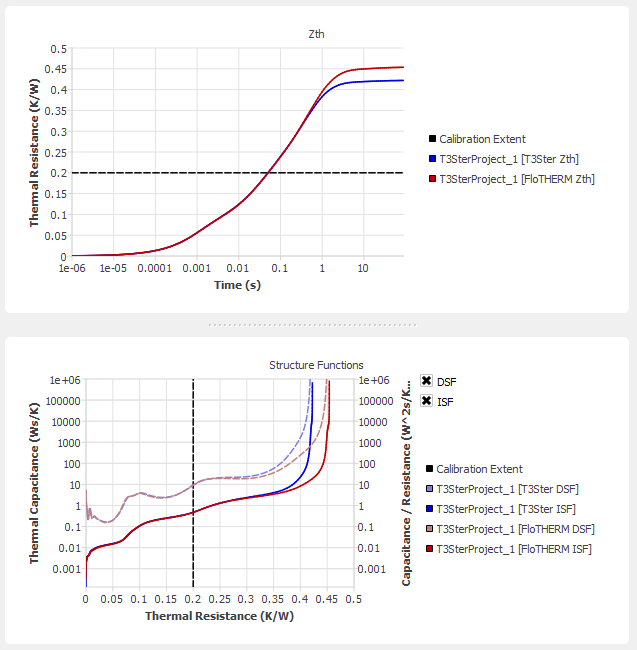
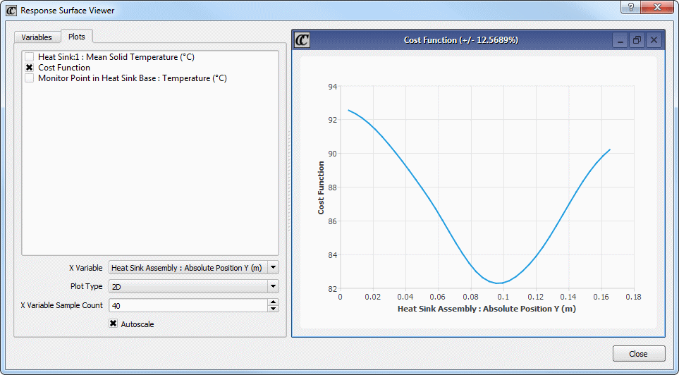

Use the Model Calibration dialog box to
work through this procedure.
Prerequisites
One or
more flocalibration files containing experimental
data exported from T3Ster Master v2.4 or later.
A Simcenter Flotherm model for comparison which must:
Be a Transient
analysis, and the transient duration must be greater than the experimental
transient duration.
Not be a Flow
Only type of solution.
Include a temperature
response to be used for comparison with the experimental temperature
response. This can be by either from a volume region or monitor
point:
In the
majority of cases, T3Ster senses the average temperature in the
active ‘surface’, typically a few microns thick. In these cases, use
a volume region coincident with the heat source object. Applicable
to power transistors, LEDs, and simple ICs.
In some cases,
T3Ster senses temperature at I/O pins of an IC. In these cases,
use a monitor point at the correct location at the external band
of the chip.
Procedure
From Simcenter Flotherm, start the
Command Center and choose Calibration > Model Calibration to open the
Model Calibration dialog box.
Click Import
T3Ster Measurement, select one or more flocalibration files
then click OK to import experimental data
from T3Ster.
The T3Ster Zth and Structure Functions curves are displayed
for comparison with the Simcenter Flotherm model.
Figure 1. Comparison
Curves

Tip
You can zoom in and out of these curves, refer
to the Usage Notes in the dialog box description, “Model Calibration Dialog Box”.
You can compare the effect of using T3Ster Master Square Root
correction on the Simcenter Flotherm curves
by checking and unchecking the “Use T3M Correction Settings on FloTHERM
data” check box in the Calibration section of the dialog box, see “‘Square Root’ Correction”.
Specify
the Simcenter Flotherm temperature response
that is to be compared with the experimental data by selecting a
monitor point or volume region from the Model Temperature combo
box.
The Zth and Structure Functions curves are displayed.
Note:
The T3Ster power value is
used when calculating Zth and Structure Functions curves for the Simcenter Flotherm base case
and scenarios.
Click Setup
Check to open the Model Calibration Setup Check dialog
box and make sure the baseline model matches the experimental conditions
before calibrating.
The Power1,
Duration, and initial temperature (Tinitial) values are displayed
for the imported experimental data (T3Ster) and the base Simcenter Flotherm model.
The
transient duration must be at least as long as experimental. If
it needs to be adjusted then make sure that the Regenerate Time Patches
check box is checked.
The Simcenter Flotherm time
grid patches are re-created, based on one time patch per decade,
a minimum of ten time steps and with an increasing index of 1.5.
In addition, the Keypoint Tolerance value in the Project Manager
Transient Solution dialog box is changed to 1e-09 s.
Click Adjust to
modify the Simcenter Flotherm model
to ensure the power, duration, and initial temperature match the
imported T3Ster measurement settings.
The Adjust command causes all
scenarios to be re-built, therefore, it is recommended that it be
used before rather
than after solving scenarios.
If there is only one T3Ster measurement loaded, then
all total power settings (as described above) are scaled in the
base case to match the T3Ster power. If there is more than one T3Ster
measurement loaded, then the Simcenter Flotherm model
power is not modified.
Click Close to
close the Model Calibration Setup Check dialog box.
Specify
the parameters of the model you would like to calibrate in the calibration
run. Typical input variables chosen are those whose precise values
are uncertain, dimensions that are difficult to measure, or material
properties, for example, TIM thicknesses, active area dimensions,
and so on.
Open
the Input Variables view of the Command Center and select one or
more input variables.
For
each variable, select the Design Parameter variance type.
Specify
the range but setting the Minimum and Maximum Values for the variable.
Calibration
errors are automatically added as output variables when T3Ster measurements
are loaded, and these are included in the cost function when a Model
Temperature has been selected. Do not add any other output variables.
If there are multiple calibration error output variables, you can
change the Cost Weighting, which defaults to 1, to adjust the cost
function contribution from each calibration error.
Note:
If you set the cost weighting of a calibration
error to 0, then the value of the calibration error is not calculated.
Also, any measurements with a cost weighting of 0 are not included
in R2 calculations
for the optimal scenario.
Return
to the Model Calibration dialog box.
The input variables and their ranges are displayed in
the Design Limits section of the dialog box. Linear Function type
input variables are fully considered in the optimization, but are
not displayed in the dialog box.
Use the
dialog box to create a Design of Experiments set of scenarios. In
the Create Scenarios section, enter a Number of Experiments to Design
(typically five times the number of input variables) and click Design Experiments.
The Command Center Scenario Table shows the scenarios
that have been created.
In the
Calibration section of the dialog box, use Calibration Extent to control
the range of Rth that
will be considered for calibration.
Structure Functions represent the entire heat flow
path, from die, through the package, and into the environment. Typically,
you will be interested in calibrating the package, but not the environment.
A value that represents ThetaJC should
be used here. If the imported flocalibration file
was created from a T3Ster TDIM project then the value is set to
ThetaJC upon
import. Refer to “Model Calibration Extent”.
The Calibration Extent value is shown as a black dashed
line on the Zth and Structure Function charts.
In the
Calibration section of the dialog box, choose the Optimization Type.
The Command Center supports both Response Surface and Sequential
Optimization techniques and either can be utilized for the model calibration.
Click Calibrate
Model and wait and for all solves to complete.
After unsolved scenarios have been solved, the calibration
cost function (the difference between the simulation and experimental
ISFs) is calculated, and optimization is started. When using Response
Surface Optimization, the optimal result is first predicted with
Response Surface manipulation, and then fully solved.
Results
As scenarios are solved, the Scenario Table will contain the
following output variables:
The weighted sums of the T3ster project calibration errors. The
optimization process drives this value towards zero, and drives
the Accuracy figure towards 100.
Selection from the Scenario dropdown list at the top of the chart
section of the calibration dialog box displays the Zth and
Structure Function curves for each solved scenario.
When all solves are finished:
The calibration
Accuracy is reported in the Calibration section of the dialog.
The chart area
displays Zth and
Structure Functions for the optimal scenario.
When the Response Surface method is utilized for optimization,
examination of the response surfaces (Chart > Response Surface Viewer) enables
a better understanding of the design sensitivity.
The Cost Function response surface plot should have a well-defined
minimum value within the range of input variable values, for example,
see Figure 2. Such a plot confirms
that the range of input variable values was well chosen. If the
minimum lies on the edge of the range, then there may be a better
value beyond that range.
Figure 2. Response
Surface Viewer 2D Plot Showing a Well-Defined Cost Function Minimum

Also note the indicated accuracy of the Response Surface in the
title of the chart. A large number here can be reduced by creating
and solving additional scenarios, and re-running the Calibrate command.
Examples
A spreadsheet, IGBT_Creator.xlsm, and calibration
file, IGBT_experiment.flocalibration, are supplied
in the following folder:
install_dir/flosuite_version/flotherm/examples/Demonstration Models/Detailed Model Calibration
The spreadsheet contains a macro that creates a typical IGBT
model. Inputs for the IGBT stack geometry, materials, power, and
so on are used to created a transient model for use with the calibration
feature.
The calibration file is a typical measurement associated with
this type of module.
1 The Simcenter Flotherm power reported is the
sum of any Total Power (that is, not Power/Volume or Power/Area)
settings in the Simcenter Flotherm model
in Source attributes, Thermal attributes and Die SmartParts.